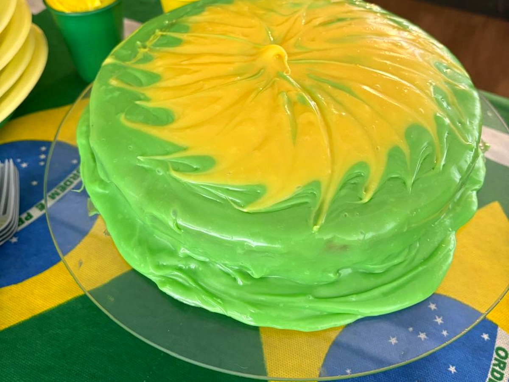
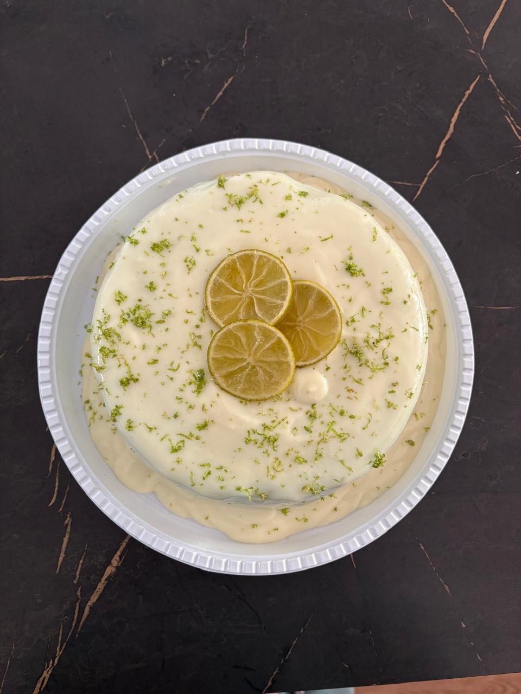
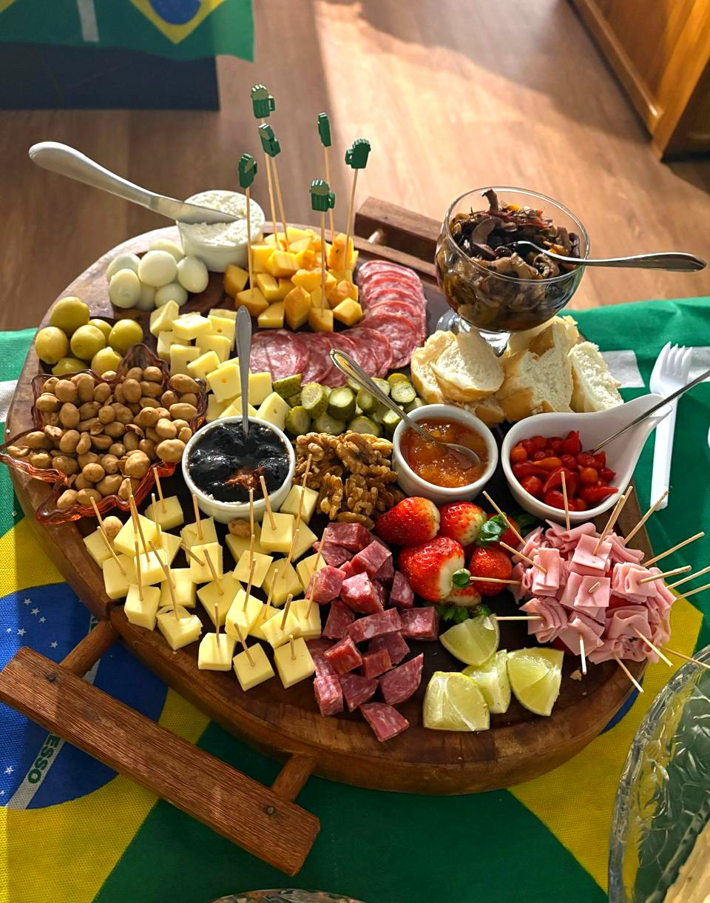
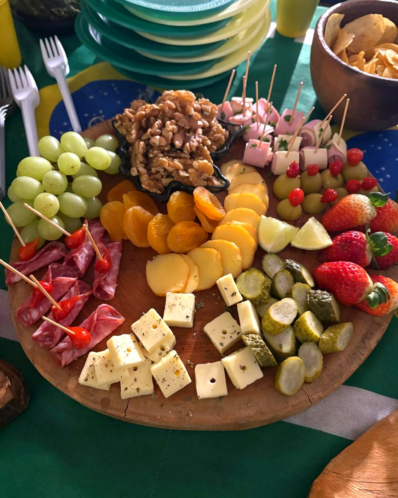
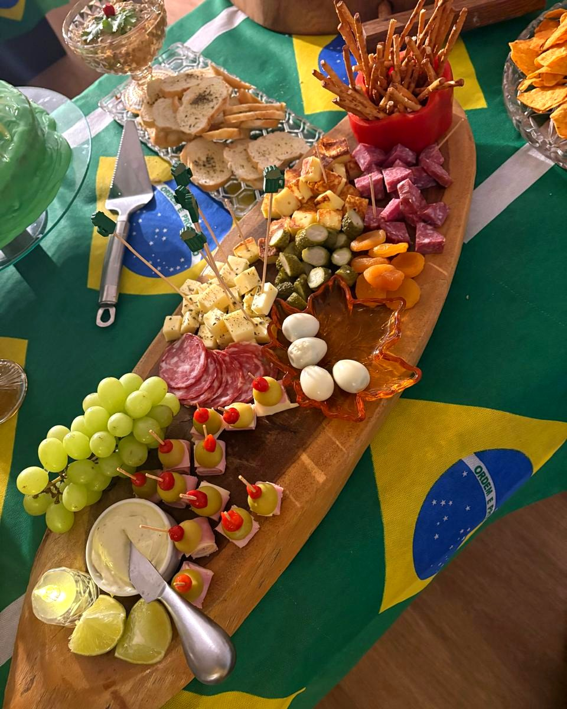
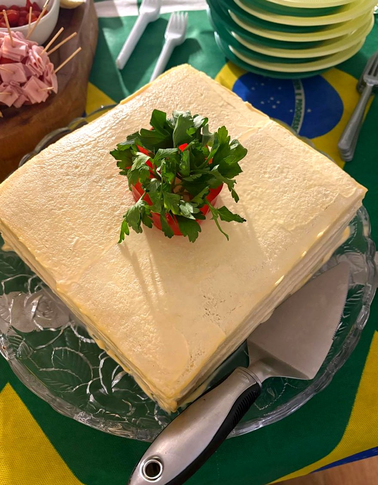
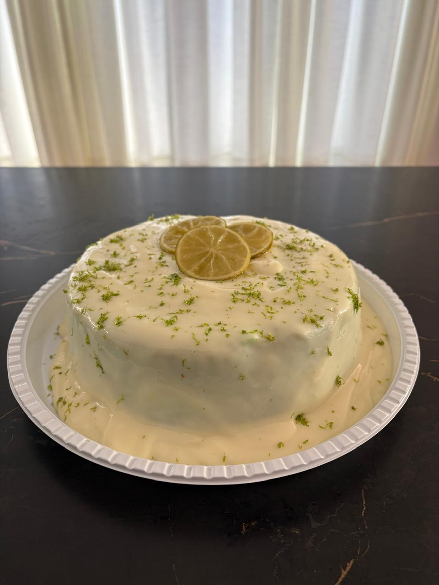

Receitas em pequena escala
Mais controle de ponto, textura e frescor em cada preparo.
Confeitaria artesanal sob encomenda
Doces finos, bolos e lembranças preparados em pequenas levas, com acabamento manual e atenção ao sabor que uma produção industrial não entrega.
Feito para momentos especiais
Mais controle de ponto, textura e frescor em cada preparo.
Cada detalhe é ajustado conforme o pedido, sem padrão de fábrica.
Sabores, quantidades e apresentação podem ser combinados antes da produção.
Vitrine comercial

Bolos artesanais sob encomenda para festas, datas temáticas e celebrações familiares.
Encomendar
Cobertura cremosa de limão, raspas frescas e fatias caramelizadas. Leve, perfumado e irresistível.
Encomendar
Queijos, embutidos, frutas, conservas e acompanhamentos artesanais compostos com cuidado para cada ocasião.
Encomendar
Composição em tábua circular com queijos variados, salame, uvas, morangos e conservas.
Encomendar
Tábua em madeira rústica formato canoa — visual elegante, ideal para mesas de celebração.
Encomendar
Torta salgada artesanal com recheio cremoso, montagem em camadas e finalização decorada.
EncomendarRegistro em vídeo para mostrar textura, volume e apresentação dos produtos preparados à mão.
Encomendar mesa
Por que artesanal é melhor
Em produtos industriais, o objetivo costuma ser repetir grandes volumes com longa validade. Na confeitaria artesanal, o foco muda: preparo próximo da entrega, escolha cuidadosa dos ingredientes e ajuste manual do acabamento.
Produção por encomenda reduz espera em estoque e preserva textura.
Cores, sabores e apresentação podem acompanhar o tipo de celebração.
Pequenas levas permitem observar ponto, recheio, cobertura e finalização.
A encomenda é pensada para pessoas específicas, não para uma prateleira genérica.
Encomenda direta
Selecione uma categoria ou descreva a ideia da ocasião.
O prazo ideal será confirmado conforme agenda e complexidade.
Valores, retirada ou entrega serão combinados antes da produção.
Seu pedido é preparado em pequena escala, perto da data combinada.
Pedido pelo site
Preencha o formulário e clique em enviar — o WhatsApp abre com a mensagem já montada.